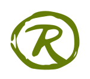

The Greenest Coffee Cup Ever.
The EarthCup is a beautiful, functional, reusable take-away cup hand-crafted from bamboo and teak wood. Not only does it carry your favorite beverage in epic green style-- it removes CO2 and plastic from the biosphere.
We carefully consider every element of the EarthCup's life-cycle to make it an ever greener product.


EarthCups are now available for purchase on the Gobrik Regen store for 15$ USD + shipping.

The EarthCup is another Regenerative Innovation by Russell Maier.
Copyright 2020 Russs.net
